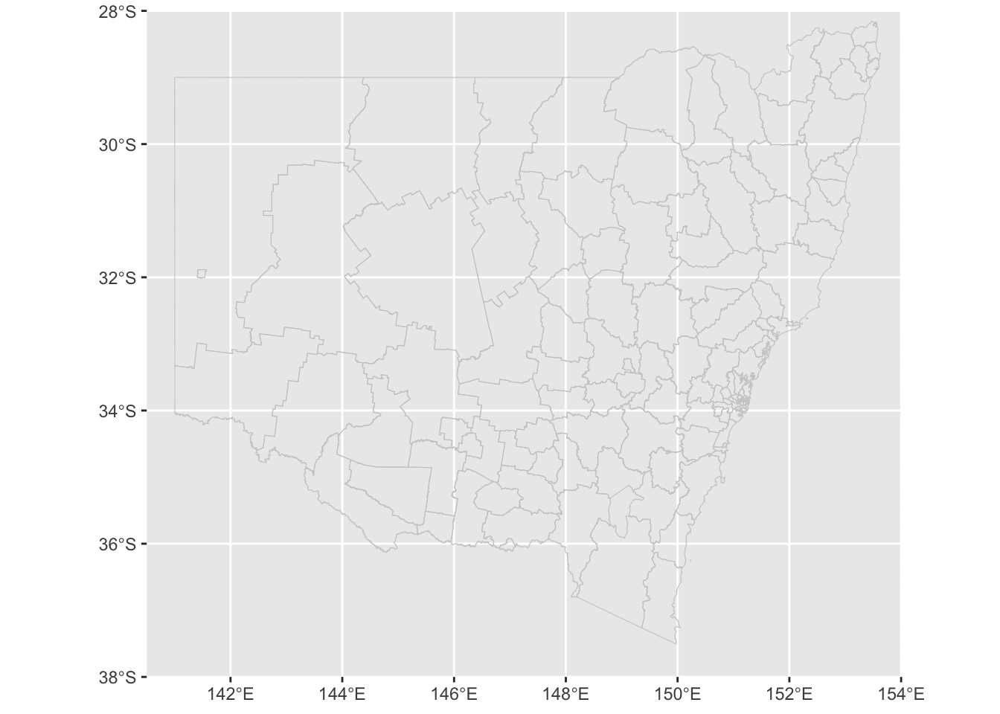
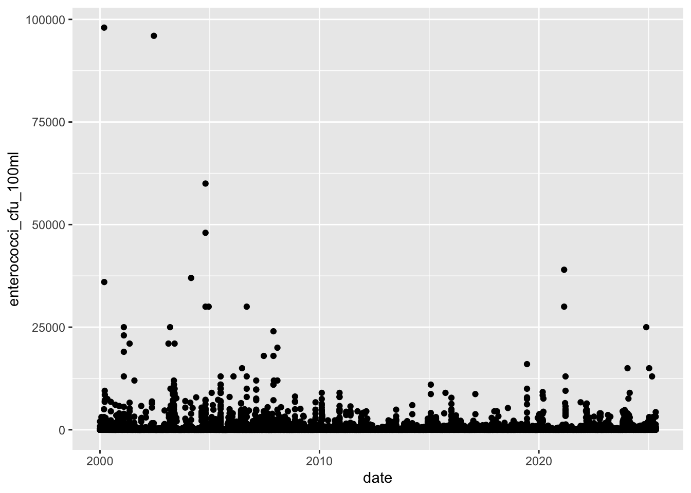

NSW map
Water Quality at Sydney
Water Quality Heatmap
Microbial Assessment Category (MAC)
clean_enterococci <- water_quality %>%
filter(!is.na(enterococci_cfu_100ml))
max(clean_enterococci$enterococci_cfu_100ml)[1] 1100000ggplot(clean_enterococci %>%
filter(lubridate::year(date) >= 2000)) +
geom_point(aes(x = date, y = enterococci_cfu_100ml))